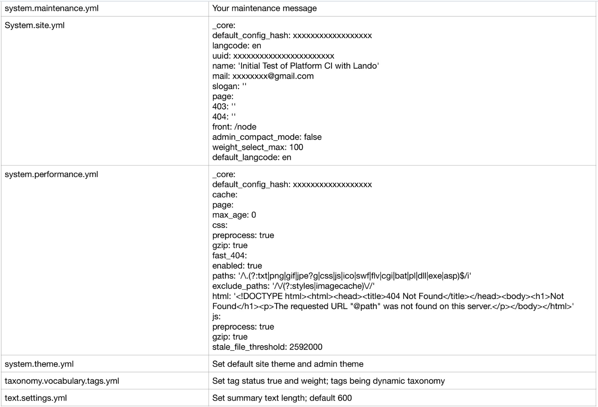

When doing your splits in a configuration, you can find the YML file involved in what you want to do differently by split within the 'config/sync' subdirectory. Make a copy of it and place that copy in each of the splits you want to use it; e.g. 'config/local', 'config/develop', 'config/staged', and/or 'config/main'. What you will do is then open the file in each subdirectory where you placed it using your VSCode editor. There you can make the changes you want for the given split. Remember that YML files are very "English" like and thus this is probably easier than you thing. Often your end will just be changing something like TRUE to FALSE on a single line.

 - Next -
- Next -